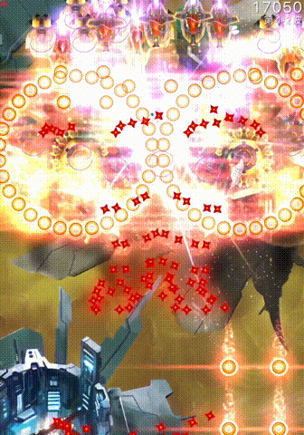

Zens
Phoenix II FAQ (IOS)

BOOKMARK
FAQ (IOS) by light_rock_zz
Version: 4.3 | Updated: 10/22/2024
FAQ of the Month Winner: January 2020 | Highest Rated Guide
Ships
Zens
| General Zen strategies as upgrades progress | |||||||||
|---|---|---|---|---|---|---|---|---|---|
This section discusses how each Zen evolves as their upgrades go, how upgrading them would help you, as well as detailed strategies to use them to maximum effect.
The Charge Time Recovery of a Zen measures the amount of time taken for the Charge Time of the Zen to return to the base Charge Time of the Zen after using it once, and then continue to pilot the ship actively throughout.
- The recovery only starts once your main weapon
 starts firing again, not at the point the Zen is allowed to effect.
starts firing again, not at the point the Zen is allowed to effect. - If you see your entire ship flash light blue (similar to an activated warp gate) and hear a high pitch sound, it means that your Zen has fully recovered and the charging time of the Zen is back to its base Charge Time .
Kappa Drive

| Upgrade Lvl | Attraction Power | Generator Efficiency |
|---|---|---|
| 1 | 100% | 100% |
| 2 | 129% | 114% |
| 3 | 157% | 129% |
| 4 | 186% | 143% |
| 5 | 214% | 157% |
| Ultimate (6) |
Ultimate  enables Kappa Overdrive , which slows down time by 50% (half the normal game speed, like playing a YouTube video at 0.5 speed) when Kappa Drive is active.
enables Kappa Overdrive , which slows down time by 50% (half the normal game speed, like playing a YouTube video at 0.5 speed) when Kappa Drive is active.
Useful Levels: 1, Ult
Brief Summary: More useful on radius based Auras than counter based Auras since any amount of using Kappa will almost always help. A very useful dodging tool, thus highly recommended for beginner players. Even helps pros in the toughest missions. Best abused on a bigger screen.
As you upgrade Kappa, you just get better Aura usage out of an improved Kappa Drive.
Strategies
- Kappa Drive should be always used between wave and Act transitions, unless you are already at full Aura capacity.
- Obviously, Kappa should be used if your Aura is running low, which means either a small radius, or you are left with 1 or 2 counters
 .
. - Kappa only serves to enhance the Aura , so the actual usefulness of Kappa depends more of the Aura than Kappa itself.
- It can be both offensive and defensive.
- It can serve to improve survivability or speedrunning capabilities.
- Bear in mind Kappa disrupts many main weapon firings, unless they are of the Uninterruptible Burst weapon class.
- Kappa usage during waves should be regulated according to the ship's main weapon class.
- A less known fact is that all ships equipped with Kappa have a more powerful passive particle attraction.
- This means that even without Kappa active, you are pulling in particles faster than a non-Kappa ship.
- When upgraded to ult
 , the utility of Kappa is increased greatly.
, the utility of Kappa is increased greatly.- The slowdown in time allows for the technique known as Kappa Dodge.
- This technique allows to dodge between the tiniest of gaps between bullets, which are normally nearly not humanly possible due to the speed of this game.
- Primary purpose of this technique is for desperate survival, although because of Kappa's ability to generate and attract particles and the close proximity to bullets and thus massive grazing, you can gain quite a lot of Aura from this technique as well.
- The movement of bullets also makes dodging much more difficult under normal circumstances since there are so many bullets moving in many different directions.
- The time slowdown also allows you to make decisions better.
- This gives Kappa an additional defensive aspect. The video below shows how useful the Kappa Dodge technique is:
- The other advantage of having a slowed time is the ability to safely graze many bullets.
- This severely enhances defensive radius
 based Auras since you can quickly generate a usable Aura size after using that radius based Aura again.
based Auras since you can quickly generate a usable Aura size after using that radius based Aura again. - It also helps offensive radius based Auras quite a bit due to the fact they can be launched quicker and disposed off quickly to allow another charge to start building up again.
- Kappa must be used pre-emptively (and abused) so that you can kill without getting cornered.
- Kappa does help counter based Auras , but not as much since it takes a longer time for the effects of Kappa to be realized.
- This severely enhances defensive radius
- Kappa regulation is very important in very dense waves.
- It should be used in very small bursts in order to pull in just enough particles to keep a healthy sized Aura , or enough to fill your counters almost to the max (one less than the max).
- Overabusing Kappa in dense waves will result in particle shortage later on.
- For offensive based Auras, be sure to know the disposal time of your Aura.
- Some Auras such as MS
 and LS
and LS  take a bit longer to dispose compared to VL
take a bit longer to dispose compared to VL  or GM , so progressively pull in particles as your Aura is being disposed of (instead of simply letting it run from the start).
or GM , so progressively pull in particles as your Aura is being disposed of (instead of simply letting it run from the start).
- Some Auras such as MS
- It should be used in very small bursts in order to pull in just enough particles to keep a healthy sized Aura , or enough to fill your counters
Mega Laser


| Upgrade Lvl | Damage | Charge Time | Charge Time Increase | Charge Time Recovery |
|---|---|---|---|---|
| 1 | 150 | 2.3s | 0.5s | Average (4s) |
| 2 | 155 | 2.2s | ||
| 3 | 160 | 2.1s | ||
| 4 | 165 | 2.0s | ||
| 5 | 170 | 1.9s | ||
| Ultimate (6) |
Ultimate  increases the width of ML to 150% of its original width.
increases the width of ML to 150% of its original width.
Useful Levels: 1, Approximately 4-Ult
Brief Summary: Quite a straightforward offensive Zen. Positioning is key. Recommended for intermediate players and upwards. Most effective against thick columns of small Invaders or big Invaders.
Upgrades
- Level 1 Mega Laser is the most sluggish offence in this game, and is only really usable either between Act transitions, or during wave transitions where the next wave has a frontline Vulture.
- Otherwise, it has no defensive aspect at all and only serves as an offensive tool that can make certain waves easier.
- As you upgrade ML, it becomes more and more responsive and it becomes possible to charge it between wave transitions with Level 3 or 4 and above.
Strategies
- ML is a great step to learning speedrunning and the basics of important positioning.
- The time taken to charge ML forces you to be careful where you position yourself at.
- Wrong positioning can lead to dying.
- However, there is some leniency in ML in the fact that it clears bullets ahead of you once fired.
- With the ult , it has a little bit more leniency.
- With the ult
- Also, it does not matter at what vertical height of the field you start charging ML.
- Only your horizontal position matters.
- This means ML is almost always charged at the bottom of the screen.
- The time taken to charge ML forces you to be careful where you position yourself at.
- As a general rule, charge ML whenever you can between wave or Act transitions.
- There are also rare cases where ML can also be charged mid-wave, especially for heavy waves, and even against Condors
 and Rocs
and Rocs  .
. - It is likely because there are no dart tracking turrets or boomerangs
 around, or you are facing a Condor or Roc that is very upfield.
around, or you are facing a Condor or Roc that is very upfield. - It is usually possible to abuse ML in Shuriken/MIRV missions, more than once per wave.
- Charging ML between dart/pellet lanes is a very useful skill for speedrunning.
- Dealing with dart/pellet lanes of a T4 spinner is very dangerous, but highly rewarding if done correctly.
- There are also rare cases where ML can also be charged mid-wave, especially for heavy waves, and even against Condors
- ML has good bullet clearing capabilities which can be relied on a fair bit.
- Bear in mind it's usually only a 1 or 2 time use.
- Particularly, it is helpful since you can ride up the ML, meaning you move upfield together with the ML.
- This move allows you to quickly collect particles from the Invaders that were killed, as well as particles that may be left behind in the previous wave (since you didn't collect them when charging at the bottom).
- It benefits both offensive and defensive Auras equally.
- It may also be a useful move when bullets are approaching from the sides where you charged ML since you can quickly escape them.
- Take note that there is usually a tiny gap between the start of the ML itself and your ship's core.
- This means that there is a small chance that a bullet in front of you will not be eliminated even after you fire off ML.
- If you see a bullet too close for comfort after firing ML, you should instead pull yourself back to the bottom of the screen quickly to avoid a high chance of death.
- The problem with ML is the very fact that the horizontal position matters
- With such a long charge time, many small Invaders may potentially escape the ML when it finally fires.
- It is thus important to understand the layout of the wave where you charge ML, and charge based on the initial formation.
- For example, if the right column is tall, you should align yourself with the right column.
- As a general guide, going into a wave with no prior knowledge, offset slightly to one side from the vertical centerline, and adjust from there.
- Conversely, if you are aiming at the middle column of Invaders, it is better to slightly offset to the left or right, usually somewhere close to the 1/4 or 3/4 margin.
- This allows you to have a higher chance to catch Invaders from 2 columns instead of one.
- This offset is unnecessary if you have a Vulture behind everything since it will definitely soak up the spillover damage.
- With 2 Eagles at the back, the offset is still helpful, especially if they choose to split apart.
- With large Invaders on field, ML is bound to deal devastating damage since they soak up everything and there is no damage spill.
- When speedrunning, in Acts 1-3, it is almost always beneficial to release ML a bit earlier than the moment the Invaders fully arrive on field, so that you can quickly re-position yourself to the opposite side where you charged ML to take out the remaining Invaders.
- Even for an Eagle, you can slightly pre-fire ML to completely obliterate it, unless there are Ravens behind it.
- The less health the Invaders of the first wave of the next Act have, the earlier you can simply Fire and Forget.
- You can also charge ML close to the left/right side of the screen.
- This punches a hole in Invader fronts such that you can directly deal with threats behind.
- With a Vulture or 4 Eagles in front blocking the way however, ML is not enough to plow your way through to reach the potentially troublesome Invaders at the back.
- In such cases, it may sometimes be beneficial to charge upfield, above the rest of the Invaders to reach the Vulture behind to kill it quickly, especially if it has very dangerous turrets that fire quickly.
- You can also use this technique to get rid of very dangerous turrets on Condors or Rocs if really desperate, but this is an extremely risky move that should only really be considered for ships with an offensive Aura as well.
- In very dense or heavy waves, it generally no longer matters where you charge ML.
- If it's against armored
 Invaders, try your best to aim straight on to one column of Invaders so that there is a better chance to hit the cockpit of Invaders.
Invaders, try your best to aim straight on to one column of Invaders so that there is a better chance to hit the cockpit of Invaders.
- If it's against armored
- In light waves, there is no point to charge an ML unless it's the start of a new Act.
- In speedrunning, it is sometimes even a bad idea to charge at the start of a new Act if Wave 1 is too light, since that might waste time charging ML with an increased charge time on other waves in that Act, so just skip charging ML and use your main weapon and Aura to eliminate the Wave 1.
- Because ML takes so long to charge, it is a very useful burst reset tool, for ships with main weapons of the Uninterruptible Burst or Interruptible Burst main weapon class.
- You can fake charge an ML between waves if you know that ML is unable to finish charging.
- Cancel the ML and the main weapon fires straight away.
- For Uninterruptible Burst main weapons , the full burst goes off, so that you don't waste the initial part of the burst.
- For Interruptible Burst main weapons , the same also applies
- It is also useful if you know you don't need the full burst to eliminate the current so you can waste a bit of the burst.
- The next burst then comes out faster in the next wave.
- For Uninterruptible Burst main weapons
Mega Bomb


| Upgrade Lvl | Damage | Radius | Charge Time | Charge Time Increase | Charge Time Recovery |
|---|---|---|---|---|---|
| 1 | 30 | 300 | 2.0s | 0.4s | Average (4s) |
| 2 | 325 | ||||
| 3 | 350 | ||||
| 4 | 375 | ||||
| 5 | 400 | ||||
| Ultimate (6) |
Ultimate  adds a Fusion Core damage of 40. This means that any Invaders are underneath the blue glowing orb when MB goes off receive 70 damage compared to other Invaders that are not underneath the glowing blue orb which will receive the normal 30 damage.
adds a Fusion Core damage of 40. This means that any Invaders are underneath the blue glowing orb when MB goes off receive 70 damage compared to other Invaders that are not underneath the glowing blue orb which will receive the normal 30 damage.
Useful Levels: 1, Ult
Brief Summary: High skill offensive Zen. Wipes out crowds with relative ease (or with absolute ease in the case of Hull Invaders). The long charge time and no bullet clearing capabilities mean that MB can be hard to pull off quite often, thus it is not for the intermediate and below skill players.
Upgrades
- The only change in MB as you upgrade it is the increase in radius.
- Thus, there is actually not much change in gameplay from a level 1 MB to a level 5 MB.
- Due to its long charge time at all levels and also having no bullet clearing capabilities (Discounting the EMP Core apex), MB is a very hard Zen
 to use that heavily emphasizes risk taking.
to use that heavily emphasizes risk taking. - You must also be able to quickly decide when firing your main weapon / Aura might be more beneficial instead.
- Generally, if there are only Eagles or larger on field, it might be a better idea to cancel if your MB still has more than 1s left to charge finish.
- Due to its inability to clear bullets, it is extremely risky to charge MB without being downfield.
- There are many exceptions however, such as your ship having a defensive Aura to aid your exit from MB, or Invaders having no dart tracking turrets to shoot you at point blank.
- MB is almost always charged between wave or Act transitions.
Strategies
- When ult , the risk vs reward factor becomes even more apparent, and there is even more reward to charge MB upfield.
- Not all MB ships are able to utilize this ult properly however.
- Not all MB ships are able to utilize this ult
- MB requires prior knowledge of every wave so as to land the MBc at the most appropriate place.
- Usually, this would be between 2 of the largest Invaders, which is usually between 2 Herons / Eagles, or a Vulture.
- However, sometimes this is not possible. for example, it may not be possible to land MBc between 2 Herons which also have other Ravens in-between due to turret collision.
- The long charge times of MB, especially for speedrunning ships may also have additional charge time incurred from previous waves that necessitate the charging of MB in strange but reliable spots to pull off the MB.
- This comes with grinding and experience.
- Landing MBc on a group of Shielded
 / Armored Ravens is possible as well, and can sometimes make a huge difference in speedrunning since you can chase down less Ravens to hit with your main weapon .
/ Armored Ravens is possible as well, and can sometimes make a huge difference in speedrunning since you can chase down less Ravens to hit with your main weapon .- Unprotected Ravens die instantly from the MB explosion itself so there is no need to land MBc on them.
- Usually, this would be between 2 of the largest Invaders, which is usually between 2 Herons / Eagles, or a Vulture.
- It is important to note that the epicenter of MB is based on the center of the Fusion Core , and not where your ship core is.
- The AoE is thus dependent on the position of the Fusion Core , and not your ship core.
- MB is always pulled off once per wave, since there is simply no point to pull it off a second time due to the charge time increase
- Almost all of the smaller Invaders will also be dead, leaving the larger ones remaining.
- MB is better left to cool down since using 2 MBs in a row mean the current wave will get wiped out too fast
- The next wave which will almost always be more beneficial to charge MB may no longer have the chance to pull of MB due to the charge time increase.
- Extremely effective against dense waves, obviously.
- However, the inability to kill off most Invader-classes and Invader affinities can limit MB's usefulness.
- Particularly, Shielded / Armored Ravens hiding behind Eagles or larger will prove a problem as they cannot be destroyed instantly and still cause trouble.
- In such cases, it may sometimes be more advantageous to charge MB all the way upfield and land MBc on these pesky Ravens or Herons, and proceed to use your main weapon to eliminate the rest of them upfield before heading back down to deal with the rest in front.
- Shielded Ravens are particularly problematic since they will regenerate their shield after the MB if you leave them alone, decreasing the usefulness of MB.
- With Armored Ravens, chasing them down is just a pain anyway.
- In such cases, it may sometimes be more advantageous to charge MB all the way upfield and land MBc on these pesky Ravens or Herons, and proceed to use your main weapon
- Particularly, Shielded
- However, the inability to kill off most Invader-classes and Invader affinities can limit MB's usefulness.
- It is sometimes a good idea to let MB be charged for a while, and wait for more optimal lineups such that the MBc will land on more Herons or more Eagles.
- A good guideline is to wait for a maximum of 2s.
- It is usually recommended to throw in an MB at Wave 1 and Wave 4 of every Act.
- Wave 4 is usually dense or heavy, which makes it a good idea to use MB.
- The Act transition allows for enough free time to set off an MB on Wave 1 of the next Act.
- However, adjust where you need to.
- For example, if Wave 2 is a dense wave, but Wave 1 is very light, skip the MB charging in the Act transition.
- Similarly, if Wave 4 is a very light wave, then skip MB on Wave 4.
- In some cases, charging MB upfield or at around the center of the field may not be worth it, as this might result in particle overflow, which wasting particles for offensive Auras .
- If there are clearly a lot of particles upfield, then it is likely more worth it to charge more downfield to avoid particle overflow, and sacrifice MBc damage.
- Because MB takes so long to charge, it is a very useful burst reset tool, for ships with main weapons of the Uninterruptible Burst or Interruptible Burst main weapon class.
- You can fake charge an MB between waves if you know that MB is unable to finish charging.
- Cancel the MB and the main weapon fires straight away.
- For Uninterruptible Burst main weapons , the full burst goes off, so that you don't waste the initial part of the burst.
- For Interruptible Burst main weapons , the same also applies
- It is also useful if you know you don't need the full burst to eliminate the current so you can waste a bit of the burst.
- The next burst then comes out faster in the next wave.
- For Uninterruptible Burst main weapons
Teleport

| Upgrade Lvl | Charge Time | Charge Time Increase | Charge Time Recovery |
|---|---|---|---|
| 1 | 0.8s | 0.6s | Fast (3s) |
| 2 | 0.7s | 0.5s | |
| 3 | 0.6s | 0.4s | |
| 4 | 0.5s | 0.3s | |
| 5 | 0.4s | 0.2s | |
| Ultimate (6) |
Ultimate  adds Arrival EMP , which produces a small BEMP of radius 50 immediately on arriving at your new location you tapped on. Note that the center of the Arrival EMP radius is with respect to the ship, and not the core, which means some TP ships are slightly disadvantaged in the fact their core is placed more forward in the Arrival EMP circle.
adds Arrival EMP , which produces a small BEMP of radius 50 immediately on arriving at your new location you tapped on. Note that the center of the Arrival EMP radius is with respect to the ship, and not the core, which means some TP ships are slightly disadvantaged in the fact their core is placed more forward in the Arrival EMP circle.
Useful Levels: 1, Ult
Brief Summary: Not an easy Zen to use. Best desperate escape for beginner players. Fast cooldown means it is abusable and easy to use, but it is easy to over-abuse it.
Upgrades
- A level 1 TP can still be useful.
- You need to be skilled to pull it off as you need a ton of pre-emption skills so that you can successfully charge a TP.
- No matter, being able to get yourself out from a massive barrage of bullets headed your way simply by TP-ing away is so useful and is life-saving in many circumstances, especially when faced with a thick advancing cloud of shurikens headed your way.
- As you upgrade TP, it becomes more and more responsive, thus being much easier to use.
- Without the ult upgrade, find for the cleanest spot, one with the least amount of bullets around to TP to.
If you don't have an ult TP, you can try something fun called "Implosive Grazing" where you teleport right into the very spot the MIRV
 exploded, but only after the MIRV has really exploded (because you can die by the MIRV itself as well). Bear in mind it only works if it is a lone MIRV and MIRVs that are very tightly clustered and you are sure every one of them has exploded. This technique is shown below:
exploded, but only after the MIRV has really exploded (because you can die by the MIRV itself as well). Bear in mind it only works if it is a lone MIRV and MIRVs that are very tightly clustered and you are sure every one of them has exploded. This technique is shown below:
Strategies
- Not always easy to get into.
- For an absolute beginnner, even a sufficiently leveled TP may be an issue.
- Despite the fast charge time, many beginner players forget that there is still a non-negligible charge time, which requires some degree of pre-emption.
- Not pre-empting when to TP may result in darts or boomerangs still killing you due to their speed.
- A great tactic to learn TP is to pre-charge it as early as possible, when you have the slightest chance of getting threatened.
- This allows you to drastically slow time, in fact, time slows down by 90% (10% of original gameplay speed), allowing you to carefully decide where to TP to.
- Bear in mind you only have 7 seconds in real time to decide where to TP to.
- An interesting to note is that allowing TP to cancel does not increase its charge time.
- As you get better at using TP, the amount of pre-emption needed becomes less and less
- Eventually, you learn to only use it when only seriously threatened, and pulling back a bit to charge it safely (or charging it at the right time with sufficient pre-emption if there is no space to pull back).
- Another thing TP may throw players off is how TP-ing to your new location throws off your touch relative to the ship core.
- This usually requires a very quick repositioning of your touch on screen in order to get comfortable with using the ship again.
- Because it can be hard to pre-empt TP, learn TP by using it as an escape tool first.
- This also applies to more veteran players, especially against dangerous turrets like spinners and bloomers.
- Never position yourself way too downfield.
- Leave at least about one ship's height worth of space between the bottom edge of the field and your ship core.
- This allows you to quickly swipe behind a bit and let go, so that TP can charge quite safely.
- However, be careful when you swipe behind as there can be many times you swipe behind and die from crashing into bullets behind.
- The next step is to figure out the new position to go to.
- For a general guide of where to TP to, pick a spot where it is not too dense in bullets.
- Don't TP in the middle of a shuriken cloud, because you'll very quickly get killed by the other faster bullets that may come for you.
- Another general tactic is to generally find a spot where there are less variety of bullets, excluding boomerangs .
- Preferably, it should be light clusters of shurikens as well as pellets.
- TP-ing to where darts are is dangerous and not recommended unless you can eliminate all of them and be sure no more are coming for you soon enough.
- If you are completely trapped with no way to inch left or right (especially in the presence of spinners), charge TP knowing you are going to get trapped in between bullet streams.
- Then TP to the other side of the field, as downfield as possible, so that you can still dodge between bullet streams.
- If the whole screen looks completely cluttered with bullets, you can try TP-ing to as upfield as possible.
- However, make sure that there are no bullets from spinners since spinners tend to be slightly more upfield, making the bullet lanes too small for even dodging.
- Once you do that, try swiping across the top of the screen, from left to right (or vice versa).
- The swiping action is a distraction for dart turrets to aim at you at the back of the screen.
- This allows some time for bullets to be cooled off from the rest of the field.
- Thus swipe across, let go, and let TP run until the dart turrets start firing, or if any of the darts are already too close for comfort.
- It usually doesn't take long for them to achieve a lock-on, so there is no risk of TP cancelling.
- This dart distraction technique is very useful for many offensive TP ships as they can launch their offensive Aura immediately after the TP.
- The most common technique for TP (only if you have ult) is to TP right onto MIRVs to completely delete them away.
- Take note that it is VERY difficult but possible to eliminate a laser MIRV
 , so it is not recommended to try since they are much less dangerous.
, so it is not recommended to try since they are much less dangerous. - This is because the new arrival location must be right smack in the middle of the laser MIRV before it has any chance to trigger.
- The reason this works with pellet MIRVs is because the pellet MIRVs actually usually trigger, but the pellets that released are the ones that get deleted, not the MIRV.
- This is why TP-ing slightly further away from an pellet MIRV still sees a few pellets being released.
- Take note that it is VERY difficult but possible to eliminate a laser MIRV
- When you TP to eliminate MIRVs , the best spot to TP to is not always the spot with the most number of MIRVs clustered together.
- This is because such a spot can be rather upfield, and there are other surrounding MIRVs around that cluster that will explode.
- This causes a total complete mess of pellets flying in all directions and will most likely resulting in your death, particularly from MIRVs that come from behind your ship core.
- Instead, find a spot of MIRVs such that:
- There are no MIRVs behind you that can trigger when you arrive to that location.
- TP-ing to that location will not result in you pushing back down far enough to trigger the MIRVs behind you.
- The second priority is to find the spot with the most MIRVs that can be deleted.
- There are no MIRVs
- This is because such a spot can be rather upfield, and there are other surrounding MIRVs
- The other most common technique of TP against MIRVs , particularly those from MIRV Bloomers, is to TP to a spot near to the frontline of MIRVs to delete a few MIRVs, and then push back to the bottom of the screen.
- Then repeat it again as needed, but be sure not to over-abuse this technique as TP charge time can stack quite fast when doing this.
- You will have to dodge between pellets released by MIRVs .
- You have to still ensure that the MIRV Bloomer is destroyed as soon as possible.
- TP is also a very useful positional tool for ships that have straight firing main weapons and offensive Auras .
- Such ships utilize TP much more often than other ships that simply only use it for defensive purposes.
- The idea is to use TP to quickly line yourself up with your next target after the Invader you were aiming at is destroyed.
- For speedrunning, the degree of pre-emption needed differs by the speed of the straight firing main weapon or Aura .
- The slower the means of damage, the more pre-emption needed.
- For offensive radius based Auras , TP is also used as a "peek-a-boo!"
- What you want to do is to TP upfield, launch your Aura , and then slowly retreat back down.
- For counter based Auras , it is used to blitzkrieg, quickly getting to where you need and firing your Aura immediately after arrival.
- For this case, it becomes a very tactical gameplay, strategically sniping down targets.
Reflex EMP

| Upgrade Lvl | Radius | Charge Time | Charge Time Increase | Charge Time Recovery |
|---|---|---|---|---|
| 1 | 225 | 1.0s | 3.0s | Slow (5s) |
| 2 | 0.9s | 2.75s | ||
| 3 | 0.8s | 2.5s | ||
| 4 | 0.7s | 2.25s | ||
| 5 | 0.6s | 2.0s | ||
| Ultimate (6) |
Ultimate  deals 20 AoE damage
deals 20 AoE damage  to any Invaders within the REMP.
to any Invaders within the REMP.
Useful Levels: 1, Approximately 3-5, Ult
Brief Summary: One of the hardest defensive Zens to use. A versatile defense and offense tool once ult. Slow cooldown means it is difficult to grasp the appropriate interval between use, thus only recommended for pro players. The concept of leaving yourself exposed to incoming fire even for a short while is also not intuitive for lower skilled players.
Upgrades
- A level 1 REMP is almost useless because the 1s of charging time is just way too long and requires too much pre-emption
- That is not to say it is completely useless, as the radius of bullet clearing for REMP is pretty decent, and allows you to hop across quite a fair bit of screen space.
- This can be especially useful when dealing with spinners, as they create lanes of bullets that are too difficult to jump across normally.
- As you upgrade REMP, the level of pre-emption needed becomes less and less, thus becoming more and more useful since the lesser pre-emption also means you need to retreat less.
- This translates to more bullet clearing since you launch REMP closer to the midfield.
Strategies
- Because of the significant noticeable charge time of REMP, it is sometimes not intuitive.
- It is easy to think of their bullet clearing options only when extremely threatened.
- When that happens, the charge time of REMP, even at max level, is too long.
- Thus, it might be a better idea to learn a Zen with a lower charge duration (which is TP ) first before learning REMP.
- The other thing about REMP that is difficult to learn is the charge time recovery of REMP.
- The slow charge time recovery means that it is easy to attempt to use them again before it has completely cooled down.
- It takes 6.5s for REMP to cool down.
- To put that in perspective, it's usually once a wave Act 4 and above in community missions or once every heavy and/or dense wave in daily missions.
- Sometimes it is possible to use it twice a wave in Act 5 and above, only if the wave is heavy and/or dense.
- The bullet clearing aspect, however, is not the main selling point of REMP.
- Once you upgrade to ult , REMP's utility is significantly improved, adding a completely new dimension to using REMP.
- REMP is now a very pre-emptive tool in clearing out Invaders, before they get the chance to flood the field with bullets and lasers.
- In particular, many waves, Act 4 and above are opened up by an REMP, which means you need to position yourself to REMP before the Invaders of the next wave comes in.
- The huge advantage to REMP is how quickly it goes off, unlike MB .
- In fact, REMP is a psuedo-MB, albeit with a smaller radius and less damage.
- Despite the lower damage and smaller radius , REMP is still a useful AoE damage means to deal respectable AoE damage, especially against denser waves.
- REMP is also the most effective solution against Sparrows equipped with Caged MIRVs
 , discounting apexes.
, discounting apexes.- Simply go right into the middle of them and launch an REMP, and poof, all or almost all the Sparrows will be gone and there'll be no pellets from Caged MIRVs to deal with.
- However, reserve REMP for waves with slightly more Sparrows.
- Do not use it if the wave is too light and not dense enough with Sparrows, since the next wave might require it more, or feature a denser Sparrow crowd.
- Simply go right into the middle of them and launch an REMP, and poof, all or almost all the Sparrows will be gone and there'll be no pellets from Caged MIRVs
- There is a very small chance that REMP will not be able to eliminate the pellets released by Caged MIRVs , if the REMP is released too early as shown below in slow motion. You can see that this is because the bullet clearing portion (the blue expanding circle) is released slightly earlier than the damaging portion (the red expanding circle), so the bullet clearing effect ends just ever slightly earlier than the damaging effect of REMP.

- The unfortunate thing about REMP however, is while it is quick, it is not immediate.
- This means that learning the 0.6s timing of REMP is extremely important, since it can make all the difference in dying or missing it completely due to the Invaders not being fully on screen yet.
- This, is one of the hardest parts of REMP to learn, making REMP a high skill Zen .
- The rough timing for REMP between Act transitions is slightly after the words fully exit the screen (assuming Sparrows and Ravens coming in first).
- The most optimal REMP usage is to be as brave as possible, pushing yourself all the way to slightly above the midfield to reach all the upfield Invaders with its relatively small radius .
- While the radius isn't THAT small, it still requires you to push up high to make use of it.
- For a player new to using an ult REMP, start opening up REMPs at the lower half of the screen, progressively learning its timing and then slowly pushing it up higher and higher.
- While the radius
- Remember that REMP doesn't have any affinity and is only 20 AoE damage
 .
.- This means that against Shielded Invaders, it may sometimes be better to use a bit of your main weapon to strip the shield before REMP goes into action, so that more effective damage can be dealt.
- This means that against Shielded
- Even if the field has no Ravens, you should always pull off an REMP each wave in Act 4, and there is no reason not to with a wave with only larger Invaders (Herons and above) because there is a lot of time for REMP to cool down in heavier waves.
- This does not mean you should use REMP twice that wave however.
- For Acts 1 - 2, REMP can be used only once, usually in 1-1.
- For Act 3, sometimes you may be able to use it twice, especially in there's a heavier and/or dense wave in 3-4.
- From Act 4 onwards, once per wave.
- There are times in Act 5 here twice a wave might be even possible.
- The important thing is not to allow REMP to have a significantly long charge time of approximately above 1s.
- There are rare times, however, where chaining REMP almost immediately after one another is optimal.
- An example might be to open up wave 4 of a certain Act with REMP, clearing that wave quickly, but wave 1 of the next Act is also optimal for another REMP to go off.
- Because REMP clears off wave 4 of that Act quickly, there shouldn't be much bullets to contend with. You can then do a quick delay by drawing a quick small circle and then leaving REMP to slowly charge during the Act transition.
- When the wave of the next Act arrives, boom, REMP goes off nicely.
- In Act 5, this can sometimes mean that using REMP twice in a row in such circumstances still allow for REMP to go off comfortably in wave 2 of Act 5.
- In a pure Sparrow wave, an REMP will do wonders to eliminate all those pesky dart streamer or laser Sparrows.
- For some ships, the extreme optimization of REMP is less stressful, being able to position yourself at that spot much earlier and not wasting too much DPS from your main weapon .
- For other ships with slow travelling main weapon projectiles however, the optimization is much more difficult and you have to throw yourself into that position, meaning you let go of your touch and literally flick your touch to that spot, which allows for a small amount of movement while REMP begins to charge.
- While using REMP for damage becomes the primary purpose of REMP when ult , do not be afraid to use REMP for defence as already detailed above. Survival is always more important than going for the offense.
- One of the most advanced speedrunning techniques of using REMP for speedrunning is with regards to MIRV Bloomers.
- Since MIRVs need 0.5s before they can be triggered, it is possible to time REMP such that the pellets from MIRV Bloomers are just released, but they do not reach you before REMP is released, thus saving you from dying.
- Such a technique allows you to quickly refill your Aura due to a lot of grazing from the pellets released by MIRVs .
- Since REMP takes 0.6s to go off, and MIRVs take 0.5s before they can be triggered, taking into account a small delay between the time REMP starts to charge and the moment when touch is released, one should charge REMP just slightly before the MIRV Bloomers are fired. Here's how the result would look like when pulled off correctly:

- Since MIRVs
- The same could be done for laser MIRVs , such that one does not need to deal with the laser lines from exploded laser MIRVs, although doing so for laser MIRVs is more for survival rather than speedrunning since this prevents you from grazing the lasers fired off laser MIRVs.
Personal Shield

| Upgrade Lvl | Max Duration | Charge Time | Charge Time Increase | Charge Time Recovery |
|---|---|---|---|---|
| 1 | 2.5s | 0.6s | 3.0s | Very Slow (6s) |
| 2 | 2.75s | 0.55s | 2.75s | |
| 3 | 3.0s | 0.5s | 2.5s | |
| 4 | 3.25s | 0.45s | 2.25s | |
| 5 | 3.5s | 0.4s | 2.0s | |
| Ultimate (6) |
Ultimate  adds Laser Reflection , which deals 10 damage per laser per second. Any laser
adds Laser Reflection , which deals 10 damage per laser per second. Any laser  that hits the PS is re-directed back to a random target (which may not always be the source of the laser) as shown below.
that hits the PS is re-directed back to a random target (which may not always be the source of the laser) as shown below.
Trivia: The below drawing was done by a veteran player Lie_algebra was a suggestion to the game at the point of time when ultimates were still not implemented in the game. The devs picked up on it and implemented the ultimate of PS as laser reflection based on this drawing. Thus, the drawing below is a pretty accurate representation of how the ult for PS works. Pretty cool!
Useful Levels: 1, Ult
Brief Summary: Probably the most difficult Zen to use. Generally underpowered but it has its niche uses where in such circumstances, shines above nearly all other Zens. The very long cooldown time means this Zen is really only for the pros.
- The utility of PS is quite underrated.
- It's easy to think PS as nothing more than simply being a laser reflector to deal damage back to Invaders, or a means of defence against lasers
 .
. - However, PS can also be used against bullets.
- While the bullet clearing capability isn't much, it is very useful in dire situations when you are completely trapped.
- It's easy to think PS as nothing more than simply being a laser reflector to deal damage back to Invaders, or a means of defence against lasers
- A less known fact about PS is that it has a very tiny Phase Out time, which is approximately 0.2s.
- This does not seem like much, but think of it like a CF's Phase Out time.
- The Phase Out time of PS is able to cut your way through a thin wall of bullets, like shuriken clouds or pellets (whether lanes or simply just being annoying random pellets flooding the field).
- It is thus of extreme importance to practice PS Phase Out in order to maximize the bullet clear it is able to provide.
- As a general guide, it can help you cut through about one-eighth of the screen width.
- Use this fact to help you cut through walls and position yourself in a better spot either on the offence, or simply to escape the looming death.
- PS Phase Out is also very useful in dealing against pellets released by Caged MIRVs , as you can deploy PS for a split second and then push your way past the mess of pellets.
- Just be careful not to use it when the next wave has enough lasers you can reflect.
- Just be careful not to use it when the next wave has enough lasers
- While PS is active, gameplay speed is reduced by 25%.
- This also means that while it is advertised that the Max duration of PS is 3.5s, the actual duration is 4.67s (3.50.75), as the 3.5s refer to the in-game time.
- The rather long duration of PS allows you to have time to decide how long you want to continue staying to block off additional bullets, especially bullets coming from weird directions that are not consistent with the rest of the bullets around it.
- However, always plan your escape immediately as 4.67s will not feel like a long time and you must quickly use Phase Out when the opportunity hits.
- The thing about PS is, there is not much purpose for an increased duration.
- You would seldom use the full duration of PS since it is only used to either cut through bullets, or used to reflect lasers .
- Neither of which purpose are needed for the full duration since laser bursts only last 1s (or maybe 2s accounting for some de-synchronization), while cutting through bullets don't usually require more than what is probably 0.25s.
- However, the longer duration helps nevertheless, particularly against MIRVs which feature a sudden speed-up in bullets that you want to block off, since MIRVs move slowly and you would sometimes want to get rid of that cluster of MIRVs before being safe to exit.
- You would seldom use the full duration of PS since it is only used to either cut through bullets, or used to reflect lasers
- Another useful function is to block off more than one barrage of Invader weaponry.
- Particularly, against both lasers and boomerangs which usually come in separate bursts.
- As a completely invincible shield, PS is one of the best tools against boomerangs since it can last through the entire burst of boomerangs without running into extra risk.
- Just bear in mind don't attempt to hold out PS for 2 bursts of boomerangs , because it's not long enough to do that even at max level.
- Particularly, against both lasers
- As a last minute defence PS works very well since it's quick to charge
- But like TP , it is not instant, so be sure not to do it very last minute when a bullet is too near your ship core.
- The upgrades in level slightly decrease the level of pre-emption, but honestly, it's not anything that significant.
- But like TP
- PS works very well with Uninterruptible Burst main weapons , as well as LS , as both would continue to deal damage, making your exit slightly safer from the destruction of some Invaders or turrets.
- Because of the Very Slow Charge Time Recovery of PS, it is usually not used in light waves.
- PS will usually see usage once per heavy and/or dense waves.
- In very heavy waves, or dense and heavy waves, you can even use PS twice.
- Upgraded to the ult level, it is pretty self explanatory how to use it.
- Simply use it to block off lasers when lasers are present.
- However, it is not always beneficial to block off lasers if the laser density is sparse.
- As a general guide, if there are still more than 6 lasers that are going to be fired in one burst, PS will benefit.
- If not, it is better to simply dodge them and use your main weapon or Aura to deal more damage and kill the Invaders off faster.
- Unless of course, you are cornered with no other means of escape, which PS can help you in getting out of the tight situation.
- But only use this as a last resort.
- As an extra note, this is not to say that a non-ult PS is useless against lasers .
- In fact, it is the contrary as it is pretty much the only reliable tool against lasers in desperate times where your Aura can't get you out of laser fire.
- In fact, it is the contrary as it is pretty much the only reliable tool against lasers in desperate times where your Aura can't get you out of laser
- Simply use it to block off lasers
- PS can also be used to effectively block off DDLs
 .
.- Take note that normal or speed lasers will fire first before DDLs do.
- However, the duration of an ult PS is just long enough to last through both the initial burst of normal lasers and the DDL .
- If the entire PS isn't within the DDL , it is even possible to Phase Out away from the DDL if you think it won't last.
- Take note that normal or speed lasers
- The best usage of PS is against laser MIRVs .
- Since you should mass activate laser MIRVs , you can simply throw yourself inside a field of exploding laser MIRVs, deploy PS and take down Invaders very quickly.
- In advanced speedrunning, it is even possible to sit between 2 laser MIRV Bloomers so that all the laser MIRVs will mass activate at the exactly the same time, which is after 0.5s of being fired from the Bloomers.
- For Vultures, if the laser MIRV Bloomers are at the leftmost and rightmost of the Vulture, this is not so risky since you can be right on top of the Vulture's cockpit to trigger simultaneous mass activation.
- However, in the case of a Condor or Roc where the 2 most center difficult to reach turrets are laser MIRV Bloomers, it is possible to find a safe spot such that the laser MIRVs will zip past your core such that the laser MIRVs themselves don't kill you. This is illustrated below:
- The reason for doing this for going so up close and personal to laser MIRV Bloomers is for even more laser MIRVs to activate, making the laser reflection damage even stronger.
- In the case of 2 T4 laser MIRV Bloomers, a bit of SB
 main weapon together with this simultaneous laser MIRV activation of all 40 T2 laser MIRVs can fully wipe out a shielded Roc .
main weapon together with this simultaneous laser MIRV activation of all 40 T2 laser MIRVs can fully wipe out a shielded Roc .
- For Vultures, if the laser MIRV
- An even more advanced technique for speedrunning which rides upon the simultaneous mass activation of all laser MIRVs is the capability to graze off the laser lines of these laser MIRVs before reflecting them.
- Take note that this requires a LOT of practice.
- The moment where a graze is recognized is when the white pulse of a laser coming from a laser MIRV zips past your ship's core.
- With impeccable timing, you can deploy PS such that the game recognizes you have grazed the white pulses from laser MIRVs , yet you do not die from the lasers that are activated.
- It takes 1s from the time laser MIRVs are triggered to the time the white pulses starts to be emitted from the laser MIRVs' detonation point, 0.6s (assuming fully cooled down) to deploy PS after releasing touch, and about 0.25s between the time the white pulses starts to emit from the laser MIRVs' detonation point to the point lasers are active and able to kill you.
- This means that you have to start charging your PS between 0.5 - 0.65s after seeing the white lines of laser MIRVs appear to graze the white pulses from laser MIRVs, since you also need to take into account the tiny but non-negligible travel time from the point the white pulses are emitted from the laser MIRVs' detonation point to your ship core.
- This is an extremely tight timing which is very difficult to pull off. In fact, this is even more difficult than pulling off a Super Reflect which has a buffer of 0.5s.
- This means that you have to start charging your PS between 0.5 - 0.65s after seeing the white lines of laser MIRVs
- To practise this skill, mass activate all the laser MIRVs of a low tier laser MIRV Bloomer and then find a safe spot to hide at before activating PS.
- Be sure to try your best to fully use your radius based Aura so that it is easier to determine if you have succeeded or not.
- You may also use a counter based Aura but try to drain it such that there are at least 2 empty charges to fill.
- Since you should mass activate laser MIRVs
Focus Lance

| Upgrade Lvl | Damage | Charge Time | Charge Time Increase | Charge Time Recovery |
|---|---|---|---|---|
| 1 | 39.6 | 0.95s | 1.8s | Average (4s) |
| 2 | 0.8s | 1.6s | ||
| 3 | 0.65s | 1.4s | ||
| 4 | 0.5s | 1.2s | ||
| 5 | 0.35s | 1.0s | ||
| Ultimate (6) |
Ultimate  for Focus Lance gives it Armor Piercing
for Focus Lance gives it Armor Piercing  properties, which makes it deal normal damage to Armored
properties, which makes it deal normal damage to Armored  Invaders.
Invaders.
Useful Levels: 4 and above
Brief Summary: The Zen version of VL. Mostly used at the start of every wave, although it can also be used at the midpoint of heavier waves too. Because of the time needed to charge FL, and the need to be still, it is unreliable compared to VL which has no charging time, which has a much higher chance of hitting Ravens and Sparrows you wish to get rid of.
Upgrades
- A level 1 FL is pretty much useless due to how sluggish it is
- This requires you to pre-charge so early it is simply ridiculous to estimate, especially with bullets left over from the previous wave.
- It is also ridiculous to predict the RNG movement of Invaders with such a long charge time .
- As you upgrade FL, it becomes more responsive, and also more abusable.
Strategies
- Given the speed of FL and taking into account the time you need to stay still to charge it, you can only hope and pray that the FL will hit as many Ravens and Sparrows as possible.
- Given their rapid RNG movement, it is extremely unpredictable, in that they can quickly move away just as FL is being emitted from your ship.
- The fact that FL needs to cool down is another factor that makes FL very difficult to wield properly.
- By the time FL has cooled down, while it may not be that long, it is enough time for the field to be flooded with fast moving bullets such as boomerangs and darts.
- This means that it is very difficult to reposition yourself in a new spot where using FL might be viable.
- It's Aura counterpart, VL , allows multiple piercing lances to be fired at once, riding the field of Invaders quickly enough so that less bullets would be stacked upon you, as well as not running into positioning problems later on to fire more lances. FL also does not clear bullets, even at ult level.
- By the time FL has cooled down, while it may not be that long, it is enough time for the field to be flooded with fast moving bullets such as boomerangs
- Thus, FL may be simply seen as a one-time lance at the start of a wave.
- After that, FL is usually only used to pop turrets off Invaders, and it is simply a bonus if it can hit Ravens and Sparrows.
- FL can generally be used about twice a wave from Act 5 onwards, discounting light waves where it is only once.
- On some heavier waves in Act 4, you may be able to use it twice.
Clover ATS
| Upgrade Lvl | Damage | Charge Time | Charge Time Increase | Charge Time Recovery |
|---|---|---|---|---|
| 1 | 4 missiles 18 damage each | 0.9s | 2.5s | Slow (5s) |
| 2 | 0.85s | |||
| 3 | 0.8s | |||
| 4 | 0.75s | |||
| 5 | 0.7s | |||
| Ultimate (6) |
Ultimate  for Clover ATS unlocks Turret Seeker , which makes the missiles of Clover ATS seek out active turrets like X-81.
for Clover ATS unlocks Turret Seeker , which makes the missiles of Clover ATS seek out active turrets like X-81.
Useful Levels: 4 and above
Brief Summary: The Zen version of MS. Mostly used at the start of every wave, although it can also be used at the midpoint of heavier waves too. Fairly abusable, especially with a means of defense. Primarily designed as a quick offensive ability that can be used often
Strategies
- Straightforward offensive Zen to use.
- Primarily, you won't really go wrong if you simply activate CATS whenever it is recharged.
- Just be sure not to use it at the end of a wave as wasting any one of the 4 CATS missile is huge, since each missile of CATS is 18 damage.
- Always charge CATS as downfield as possible.
- Swipe back to the bottom to activate CATS because of the missile tracking for CATS is approx Very Good, not perfect unlike MS .
- Swipe back to the bottom to activate CATS because of the missile tracking for CATS is approx Very Good, not perfect unlike MS
- Don't use CATS against Sparrows from Act 2 onwards because you will waste most of the damage on overkill.
- The only real speedrunning tactic with CATS is to strip Invader shields of Herons or larger before letting CATS go into action (unless you have the SB CATS apex).
- There are usually way too many Ravens and it's too hard to control your SB main weapon to strip the shield but not significantly damage them to the point you would rather just kill the Raven(s) with your main weapon.
- However, as it is difficult to control where CATS missiles would go, you can only hope and pray.
- CATS tend to aim Invaders on the left and right sides of the field rather than the middle due to the way they are fired, so just sweep your SB main weapon from left to right where possible before firing CATS.
- There are usually way too many Ravens and it's too hard to control your SB
- The only other thing when speedrunning with CATS is just to fire it as frequently as possible without incurring overkill damage (if you fire it too close to the end of a wave).
- Use it at the start of a wave where possible, eliminating any frontline Sparrows first.
- Unlike MS , it is not worthwhile to barrel CATS missiles into an Invader (even if its a Vulture), as it is too dangerous, and has no additional benefit.
- While barreling into the cockpit of Invaders has the advantage of bypassing Invader armor, doing so for CATS does not bypass armor at all since the CATS missiles spawn away from the cockpit even as you are right in the center of the cockpit.
Trivia: The ATS in Clover ATS stands for Anti Turret System.
Tracking Minigun

| Upgrade Lvl | Target Tracking | Damage | Duration | Charge Time | Charge Time Increase | Charge Time Recovery |
|---|---|---|---|---|---|---|
| 1 | Fast | 168 | 4.0s | 1s | 2.5s | Average (4s) |
| 2 | 175 | 4.5s | 2.3s | |||
| 3 | 185 | 5s | 2.1s | |||
| 4 | 193 | 5.5s | 1.9s | |||
| 5 | 204 | 6s | 1.7s | |||
| Ultimate (6) | 210 |
Ultimate  adds Barrage Missiles , which takes some damage off the minigun and converts it to barrage missiles which have homing capabilities as well. It is nothing more than simply extra damage with a bit of nice touches.
adds Barrage Missiles , which takes some damage off the minigun and converts it to barrage missiles which have homing capabilities as well. It is nothing more than simply extra damage with a bit of nice touches.
Specific recommended usage of the Tracking Minigun will be mentioned under Corsair itself, since Tracking Minigun is unique to Corsair.
Useful Levels: 1
Brief Summary: The Tracking Minigun is the most unique Zen that takes such a long time to dispose of its damage, and the cooldown time only starts after the Tracking Minigun stops.
Nightfury
| Upgrade Lvl | Damage | Charge Time | Charge Time Increase | Charge Time Recovery |
|---|---|---|---|---|
| 1 | 200 | 2.3s | 0.8s | Super Slow (10s) |
| 2 | 225 | |||
| 3 | 250 | |||
| 4 | 275 | |||
| 5 | 300 | |||
| Ultimate (6) |
Ultimate  enables Bullet Destruction , which finally allows Nightfury to clear bullets in the 3 beams fired. A non-ult Nightfury does not clear any bullets.
enables Bullet Destruction , which finally allows Nightfury to clear bullets in the 3 beams fired. A non-ult Nightfury does not clear any bullets.
Specific recommended usage of the Nightfury will be mentioned under Mirage itself, since Nightfury is unique to Mirage.
Useful Levels: 1, Ult
Brief Summary: The bigger brother of ML. Packs a serious punch, decimating frontline Vultures or 2 Eagles of pretty much any affinity. Unfortunately, it is difficult to abuse due to its Super Slow recovery rate and lengthy charging time.
Trivia: As of the v5.0.3 update, the Nightfury is able to beamfight Doomsday Lasers. However, this is highly impractical since damage from the Nightfury gets neutralized by the Doomsday Laser. The duration of a Doomsday Laser is much longer than that of the Nightfury. Here's an awesome capture of it in action: